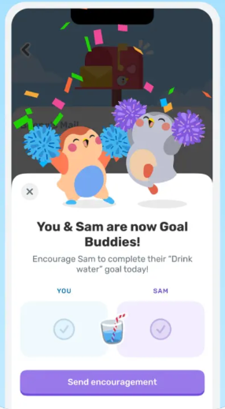
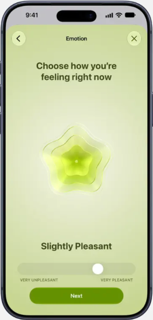

W08 · DAY 1–3 · 情感化细节
当日完成 · 鼓励浮层
页面目标：给「今天做完了」一个即时、可见的回报，这是 Day2 留存的关键。
1
彩带 + 蒙层：首页仍隐约可见，用户知道自己没有离开当前页面。
2
步步破框：角色超出弹层上沿，播放吸收养分、长出新叶的动作。文案用步步第一人称，并预告明天。参考 Finch
4
多模态 · 手势 + 震动 情绪滑杆：拖动时步步表情实时变化，滑过三个刻度各轻震一次。选「有点累」，步步回应「那今晚早点睡，我陪你」。参考 Apple 健康
5
一个主按钮，分享为次要文字按钮；弹层出现时一次轻快双震。

